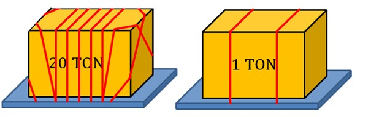

Водитель несет ответственность за безопасность груза. Вы должны самостоятельно принимать решения по безопасности.
Более того, мы замечаем, что наши клиенты имеют чёткие инструкции по безопасности различного груза. Мы просим вас придерживаться этим инструкциям.
Если нет доступных инструкций: тогда вы как водитель единственный кто должен решить, как и какими материалами груз должен быть укреплён соответственно со всеми правовыми нормами.

Вес — это один из серьёзнейших факторов которые влияют на укрепление груза. Например, на 20ти тоновый груз вы должны использовать больше Ремней чем на 1-о тоновый.
Трение - груз может скользить по поверхности контейнера. Факторы, влияющие на это - песок лёд мокрый пол. Убедитесь, что пол тщательно почищен. Уменьшить скольжение между грузом и полом помогут специальные резиновые маты. Часто клиент просит их использовать. Водитель должен убедиться что они есть в грузовике.